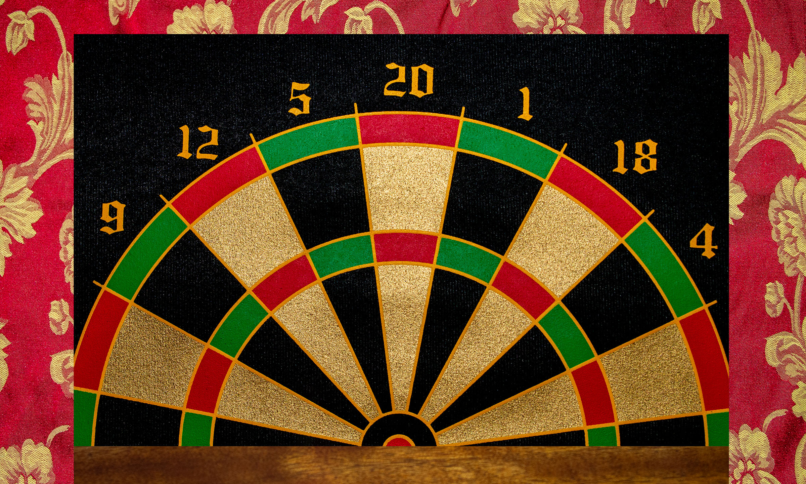

The city of Darts is one of the world’s largest centers for entertainment and performing arts. Not only is it home to Tele Vision, the world’s leading producer of movies, it is also home the Dart Opera House. Originally built for Opera’s, this grand stage is home to performances of all sorts from ballets to symphonies to musicals and plays. Since it’s fully publicly funded, performances are free, but tickets sell out within hours of being released. People will camp outside the ticket office for weeks to get a hold of tickets to the most popular performances.